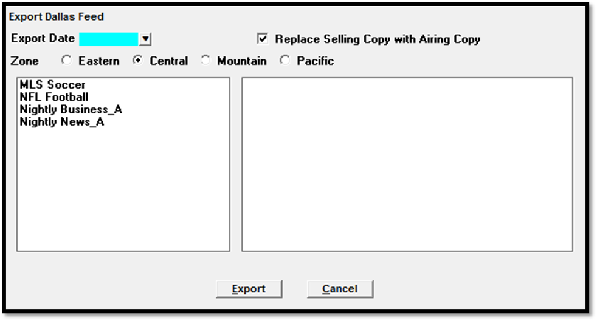

Dallas Feed
This is a client specific export that is used to create the Dallas Studio Log. The information on the log is pulled from the programming screen.
Setup Instructions
Traffic Site Options
If you are using the ASP (Counterpoint Engineering) module, you can suppress the Media Code from being included in the export by checking “Engineering/Cart Export – Suppress Media Code Except “L” (Live)” in the Site Options -> Export tab. Any cart with a Media Code of L for Live will still be included in the export.
The export can be generated by using or not using Delivery Links. Indicate whether you wish to use Delivery Links by checking the “Using Delivery Links” in the Site Options -> General tab.
If you are using Delivery Links, the Program Code (used with the automation system) is pulled from the Delivery Links screen
If not, it will pull the Program Code from the Vehicle, using the Station Code entered for the vehicle.
Sports Vehicles do not require Delivery Links
Spots from any avail name with “Automation Export” set to “No” will not be included in the Dallas Feed.
Copy
The Dallas Feed Export only works with copy rotations entered for Conventional lines, Sports vehicle lines, Selling vehicle lines, and Package vehicle lines. If copy rotations are entered for hidden line vehicles then the Dallas Feed Export will not show the copy for these rotations.
To include copy that was entered for airing vehicles (on version 7.0 and above), check on the option "Replace Selling Copy with Airing Copy" when generating the export. When this option is checked on, selling vehicle copy will be replaced by airing vehicle copy if airing vehicle copy rotations that should replace the selling vehicle copy exist (for airing vehicles that are set to "allow copy on airing vehicles" in Vehicle Options -> Log).
Pre-Feeds
Delivery Link Pre-Feeds can transmit programming/spots to the affiliate prior to their actual sold date/time, to be recorded for playback at another date and time.
The Pre-Feed screen will show the date and time that the vehicle will be Pre-Fed, or transmitted in advance.
Pre-Feed Rules
- Vehicles must be using Delivery Links to access the Pre Feed input
- Logs are not produced for Pre Feeds
- If Pre-Feeds are defined for Delivery Links, they are disallowed for Engineering Links
- If Pre-Feeds are defined for Engineering Links, they are disallowed for Delivery Links
Running the Export
Before running the Dallas Feed export, the final log must be generated on the Logs screen first.
After running the final log, go to Task -> Export and select “Dallas Feed.”

Select the export date from the dropdown menu.
Optional: The “Replace Selling Copy with Airing Copy” checkbox can be checked on or off. The time zone radio buttons can be used to adjust the times shown on the export to the selected time.
Select the vehicle, then press the Export button to run the export.
The export files will be stored in the Export folder.
Unsold avails will be noted on the right side of the screen after running the export.
File Output
Naming structure
The Dallas Feed creates two export files in the following format:
- YYMMDD1 (Year Month Day "Number" (1,2,3,etc..) The number increases with each revised export for that date
- The export file show Adds and Deletes of the spots with each revised export for the same date
- YYMMDDA (Year Month Day "Letter" (A,B,C,etc..) The letter increases with each revised export for that date
- This does not show adds and deletes
File Contents
- Field 1: A_ or D_ where A=Add, D=Delete (2 characters long).
- Field 2: Date in YYMMDD format (6 characters long).
- Field 3: Station code (5 characters long).
- Field 4: Time in HHMMSS format (6 characters).
- Field 5: Length (always 4 digits).
- Field 6: Media code and cart number (5 characters).
- Field 7: Advertiser abbreviation and product name (15 characters).
- Field 8: Advertiser name (35 characters).